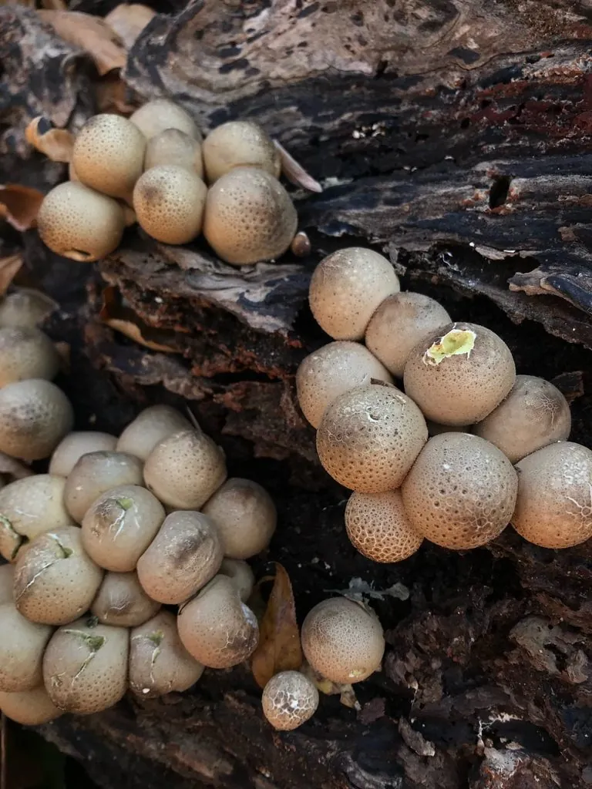

真菌 · 真菌界
梨形马勃 Lycoperdon pyriforme

蘑菇科马勃类真菌，子实体梨形、灰褐至淡黄，密生于腐木，幼嫩时可食，成熟后孢子如烟雾般喷出。
- 分类
- 门担子菌门纲伞菌纲目伞菌目科蘑菇科属马勃属
- 栖息环境
- 阔叶树与针叶树的腐木、树桩与埋木上，秋季成群发生
- 地理分布
- 北半球温带广布，中国南北各地及欧洲、北美常见
- 保护级别
- 暂无评估；种群稳定
物种志
梨形马勃的子实体梨形至倒卵形，高 2–5 厘米，宽 1.5–4 厘米，表面灰褐、淡黄褐至褐色，密布细小疣或粉状鳞片，基部有白色菌丝束。内部幼时白色、致密，成熟后转为黄绿色至褐色的孢子团。孢子印橄榄褐色，孢子球形，具细疣。
梨形马勃是马勃类中少见的木生种类，密生于阔叶树与针叶树的腐木、树桩与埋木上，秋季成群发生。幼嫩时内部纯白、质地紧实，可切片炒食，但必须确认内部全白；一旦内部变黄绿或褐色，孢子成熟，便不可食用。成熟后子实体顶端开裂，遇雨滴或外力即喷出褐色孢子云，靠风力传播。它的孢子粉在民间曾用于止血，但现代医学不推荐直接外敷野生孢子，以免感染。
形态与习性
- 子实体梨形至倒卵形，高 2–5 厘米
- 表面灰褐至淡黄褐，密布细疣，基部有菌丝束
- 孢子印橄榄褐色，孢子球形具细疣
- 生境腐木与树桩上，秋季成群，少见的木生马勃
- 食用性幼嫩且内部纯白时可食，变黄即不可食
- 传播成熟后顶端开裂，遇雨喷出孢子云
趣味知识
- 梨形马勃是马勃中少见的“木生”种类，别的马勃多长在草地上。
- 判断能不能吃只看内部：切开全白才可食，一旦发黄变褐就是孢子成熟了。
- 成熟子实体被雨滴击中会喷出一团褐色孢子云，像微型烟雾弹。
- 它的孢子粉在民间曾被用于止血，但野生孢子可能带菌，不宜直接敷伤口。